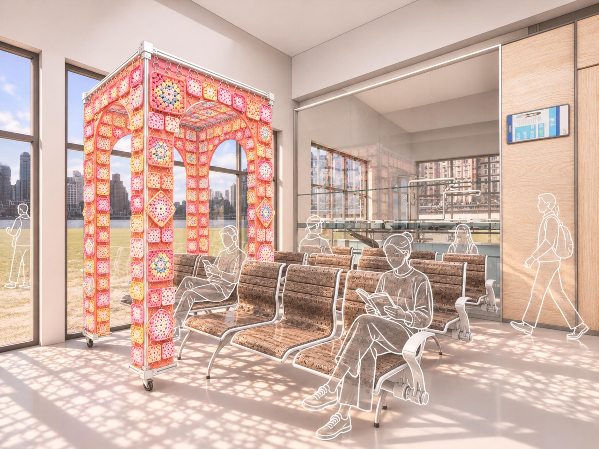
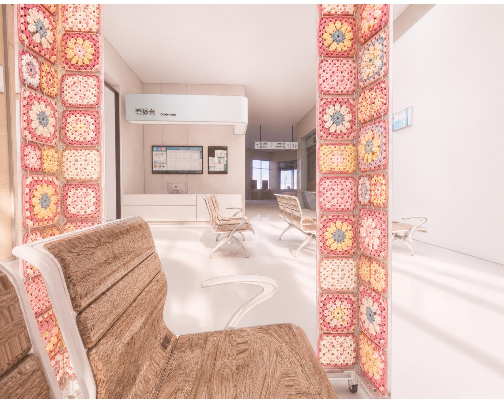
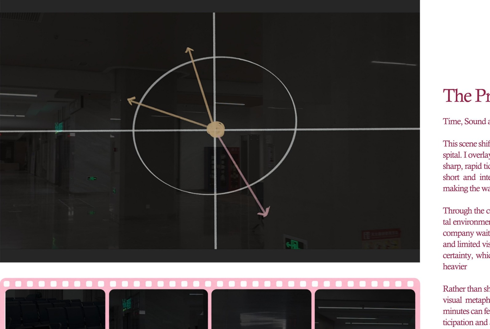

A softer space
for waiting.
From waiting
to belonging.
How can temporary spatial installations create emotional comfort in healthcare waiting environments?
Waiting Arbor explores this question through crochet, modular structures and the human experience of time. A design research project by Zihan Zhang.
Context & Research
pp. 04–1402Design Development & Making
pp. 15–2603Stories Through the Lens
pp. 27–40CONTEXT & RESEARCH
Understanding
waiting.
Waiting is an emotional and spatial experience. Site analysis and observations of everyday behaviour inform a proposal for softer boundaries, personal choice and shared participation.
Understanding waiting, emotion and spatial needs.
DESIGN DEVELOPMENT & MAKING
A rigid frame.
A flexible system of care.
From natural inspiration to material exploration: cactus structures inform the frame, while crochet introduces tactility, changing transparency and collective making.

STORIES THROUGH THE LENS
Time is felt.
Space is lived.

Stories through the lens.
Visual storytelling explores the emotional and temporal experience of waiting, from hospital observations and suspended moments to the rhythm of making.
Film studies and stills from the original portfolio.
ZIHAN ZHANG